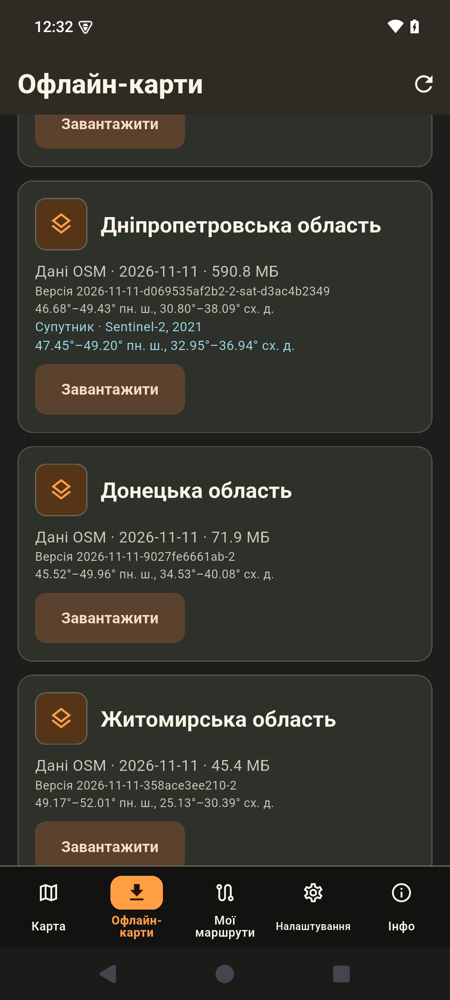
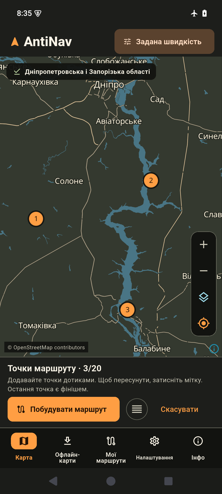
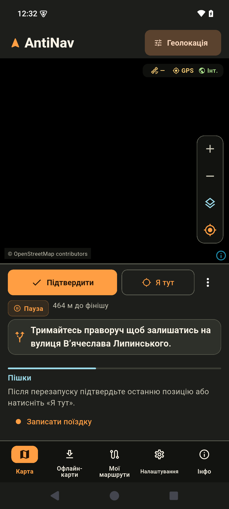
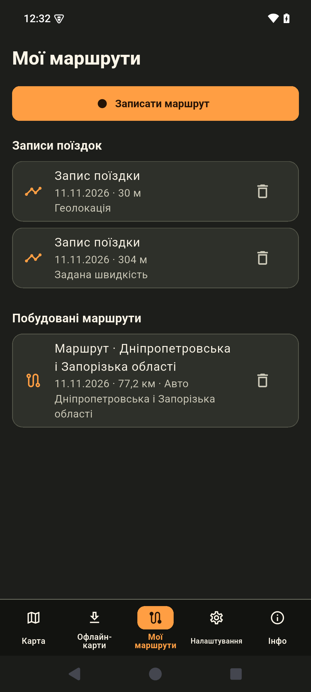

Карти областей
Завантажуйте потрібні регіони України. Для Дніпропетровської та Запорізької областей доступні оглядові супутникові знімки.
Android та iPhone
Завантажте карту області через інтернет. Далі AntiNav показує карту й будує автомобільні та пішохідні маршрути без мережі.

Завантажуйте потрібні регіони України. Для Дніпропетровської та Запорізької областей доступні оглядові супутникові знімки.
Використовуйте GPS телефона. Якщо сигнал зникне, AntiNav може оцінювати рух за швидкістю з OBDLink CX або заданою швидкістю. Позицію можна уточнити кнопкою «Я тут».
Додавайте проміжні зупинки, записуйте поїздки й відкривайте збережені маршрути.
Натисніть на скріншот, щоб збільшити.




Відкрийте «Офлайн-карти», виберіть область і дочекайтеся статусу «Завантажено».
Перевіряємо номер версії…
Встановіть тестову збірку APK, відкрийте «Офлайн-карти» в застосунку й завантажте потрібну область.
Завантажити APK Деталі випускуТестування через TestFlight
Надішліть свою адресу iCloud у WhatsApp. Після отримання запрошення встановіть AntiNav через TestFlight.
Написати в WhatsApp